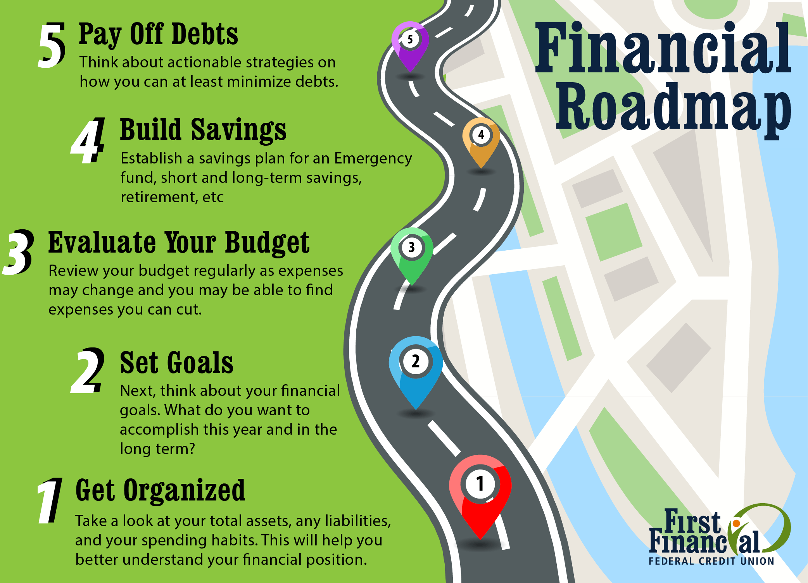

A financial goal is any plan you have for your money. You can have short-term financial goals (like saving up $1,000) or long-term financial goals (like investing for retirement). You should set goals for every area of your life, but having specific financial goals helps you literally put your money where your goal is.
And I can’t talk about financial goals without talking about the Baby Steps. Trying to decide what to do with your money can feel as overwhelming as choosing what to watch on Netflix. There are so many options, and everyone’s got an opinion.
Should you pay off debt? Save for your kids’ college? Buy a house? Invest for retirement? The 7 Baby Steps cuts through all the confusion and gives you a clear path to do all those things! It helps you focus on one goal at a time—so you can make more progress with your money and have financial peace.
5 Steps to Setting Financial Goals
Make your goal specific.
One reason people fail to meet their goals is because they set goals that are too vague. You might say, “I want to be better with money.” But what does that actually mean to you? Narrow it down!
What if you decide instead to tackle your debt? That’s a specific area of your money to focus on. Now, let’s talk about how to break this goal down even more.
Make your goal measurable.
Okay, so you want to pay off debt. Now it’s time to pick an exact amount—something you can measure to know if you hit your goal or not.
While being completely debt-free should be your ultimate goal (that’s Baby Step 2), it’s a good idea to break down that goal into smaller chunks. That way, you won’t feel too defeated before you even start.
So, maybe you have $30,000 of total debt, but you want to start by paying off a $15,000 student loan first. Hey, that’s a measurable goal!
Give yourself a deadline.
Here’s the deal: It’s super tempting to procrastinate on your goals if they aren’t time-sensitive. Author Benny Lewis says, “There are seven days in a week, and ‘someday’ is not one of them.” Stop saying someday. You need to give yourself a deadline and make it reasonable—but also a little challenging.
Back to the student loan example: When do you want to hit your goal? If you want to pay off $15,000 in one year, that means you’ll need to pay $1,250 each month. Is this possible but also a bit of a stretch? If so, good!

Make sure they’re your own goals.
Let’s talk about comparison for a moment. It’s easy to look around at what other people are doing and feel like you should be doing it too. Are your neighbors driving the latest model cars? Is that one girl on Instagram always taking extravagant vacations? Hey, good for them! But that doesn’t mean you need to do the same.
When we compare ourselves to other people, we’re playing a game we’ll never win. So, make sure you’re setting financial goals that make sense for you. In other words, just because all your friends are taking out second mortgages for renovated kitchens, doesn’t mean you should. Put the blinders on, focus on your lane, and cross your own finish line. And be clear on why you’ve chosen the goals you have.
Write your goal down.
Did you know you’re more likely to achieve your goals if you write them down? Yep, it’s true—there’s something about putting pen to paper that helps you commit to the task at hand.
So, go ahead and put your goals in writing. Then, stick them in your car, to your desk, or on your bathroom mirror. Type them in the Notes app on your phone, take a screenshot, and set it as your wallpaper so it’s the first thing you see when you pick up your phone. Keeping your goals where you can look at them will keep you on track and motivated.